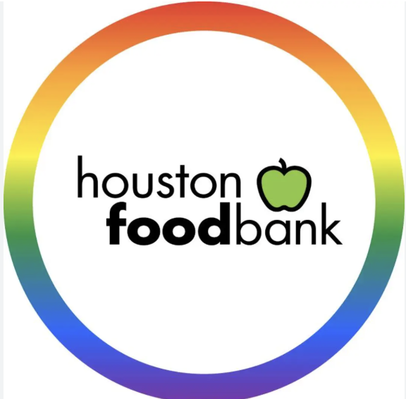
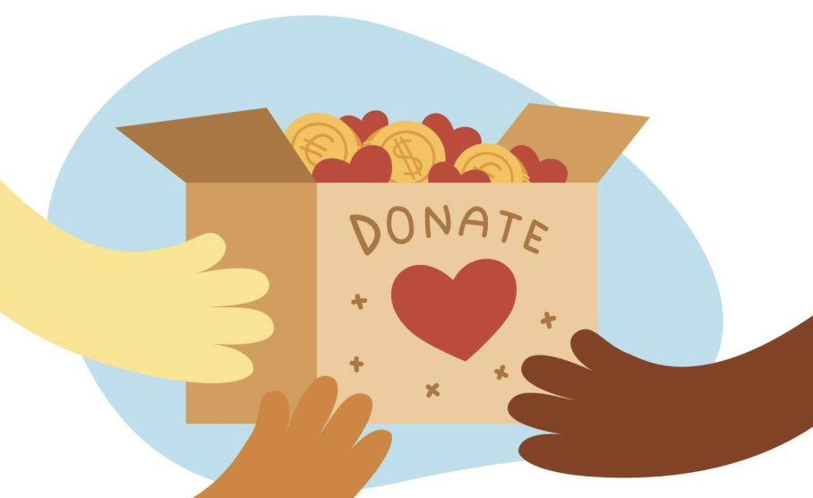
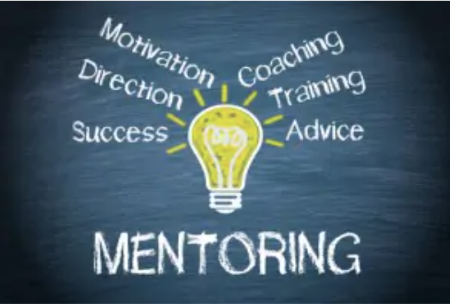

My Service

One way I try to give back to my community is through volunteering at the food bank. I package and distribute food to people in need to help everyone have easy access to essentials. For more information about how to volunteering at food banks, visit this website!

I always try to reduce waste whenever I can by recycling and finding ways to resuse products. Furthmore, to help support the environment, I donate old clothes and other unused items to give them a second life and minimize trash. To look for places to donate, visit this website!

Some other ways I hope to give back to the community in the future is through mentoring other students. I believe it can be so helpful for other students to have someone they can ask questions to and I want to be that person for someone else. To learn more about how mentoring benefits the community, visit this website!